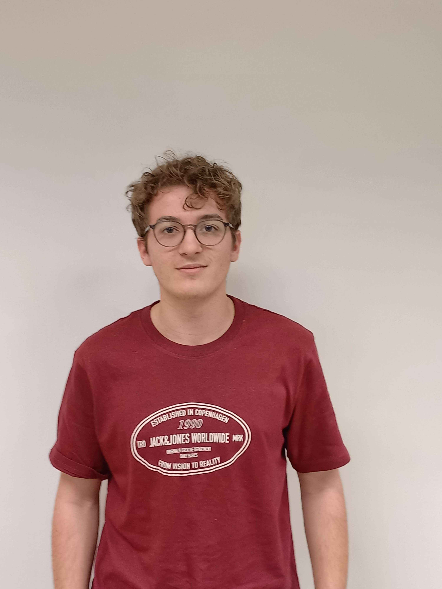

À propos

19 ans · Étudiant en BUT Science des Données
IUT de Niort — Université de Poitiers
Informations
| Formation | BUT Science des Données |
| Établissement | IUT de Niort — Université de Poitiers |
| Semestre | S2 |
| Ville | Niort |
| Âge | 19 ans |
| Promotion | 2025–2028 |
À propos de moi
Bonjour, je m'appelle Adrien Jouin. J'ai 19 ans et je suis actuellement étudiant en première année de BUT Science des Données à l'IUT de Niort. Avant cela, j'ai obtenu mon baccalauréat au lycée Saint-Michel à Château-Gontier, en Mayenne, avec les spécialités mathématiques et NSI.
Mon CV
Bilan de mon année
Au cours de cette année, j'ai eu l'occasion de découvrir de nombreux logiciels et langages de programmation très différents, comme des langages d'analyse (SAS, R…) ou encore des outils de visualisation tels que Power BI. J'ai aussi pu approfondir des compétences que je possédais déjà, notamment en Python et en SQL, ce qui m'a vraiment aidé à progresser. J'aimerais d'ailleurs continuer à travailler ces compétences pour devenir plus autonome et moins dépendant de l'IA sur certains aspects techniques, et aussi pour donner davantage de style et de professionnalisme à mes infographies.
Cette année n'a pas été simple dans toutes les matières. J'ai rencontré quelques difficultés en anglais et en mathématiques, même si mes résultats restent corrects. Je sais que ce sont mes points les plus fragiles et que je dois continuer à les travailler. À l'inverse, les matières d'informatique restent clairement mon point fort : ce sont celles où je me sens le plus à l'aise et le plus motivé.
Concernant le travail fourni, je pense que j'aurais pu faire mieux. Je ne considère pas mes résultats comme mauvais, mais je sais que je peux encore progresser si je m'organise mieux et si je fournis un effort plus régulier. Cette année m'a permis de mieux comprendre mes forces, mes faiblesses et ce que je dois améliorer pour réussir la suite du BUT.